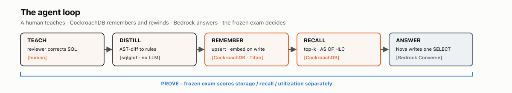
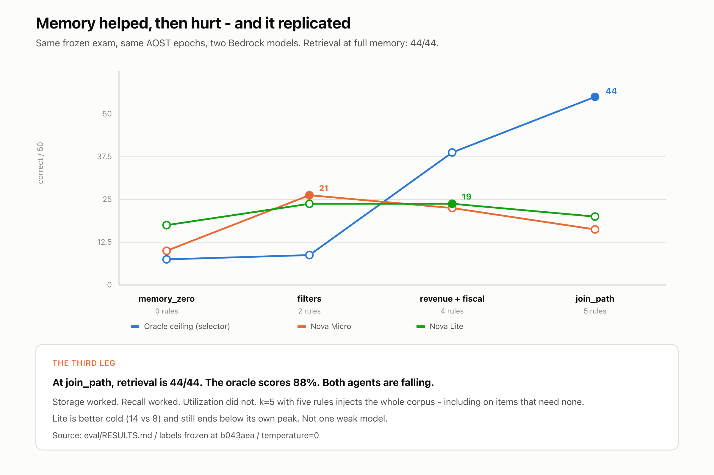
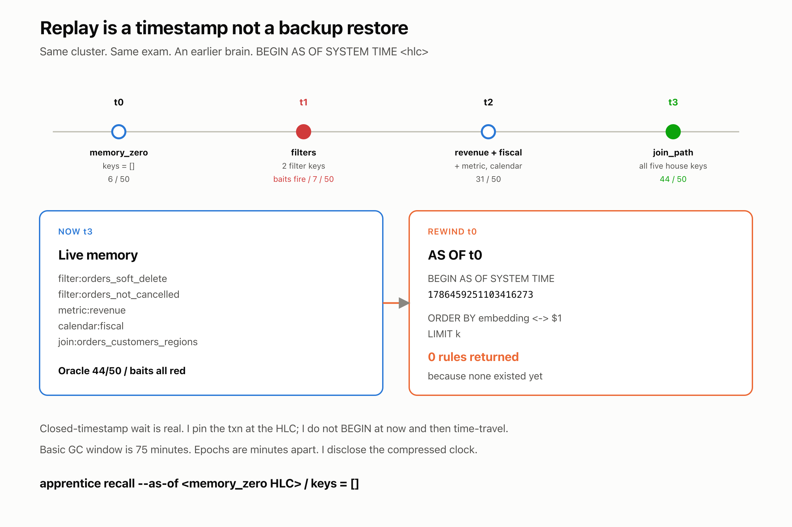

Apprentice
memory that helps, then hurts
Teach a correction → memory lives in CockroachDB → replay that education at any
timestamp. A frozen 50-question exam, graded via
AS OF SYSTEM TIME. Two Bedrock agents peak on partial memory
and decline at full memory. Retrieval at that last epoch is 44/44.
Storage worked. Recall worked. Utilization did not.

Ask the agent
Pick a frozen exam question. Ask without memory, then with memory. Suggested first pick: q02 — the video beat (20,000 wrong cold → 95,000 correct with rules).
Live: CockroachDB recall + Amazon Bedrock generation + execution against the prop warehouse,
graded against labels frozen at b043aea.
The four-epoch curve below is recorded — those HLCs are outside the 75-minute GC window.

The three curves
| Epoch | Rules | Oracle | Nova Micro | Nova Lite |
|---|---|---|---|---|
memory_zero |
0 | 6/50 | 8/50 | 14/50 |
filters |
2 | 7/50 | 21/50 | 19/50 |
revenue_and_fiscal |
4 | 31/50 | 18/50 | 19/50 |
join_path |
5 | 44/50 | 13/50 | 16/50 |
Bold in RESULTS.md = that column’s peak. Both agents peak before full memory.
Why it fell
Over-application is real and replicated; it is not monotonic with rule count.
Both models end below their own unaffected peak — Micro 5/6 → 3/6,
Lite 6/6 → 4/6. Lite’s worst cell (3/6) is at filters (two rules), not
at full memory. Micro bottoms at 2/6 mid-curriculum.
k=5 was fixed before the run. With five live rules, retrieval returns
the whole corpus and ranks nothing. That describes the prompt. It does not fully
explain the unaffected column.

Reproduce the freeze (no cluster)
git clone https://github.com/prasadt1/apprentice-crdb.git cd apprentice-crdb python3.11 -m venv .venv && source .venv/bin/activate pip install -e ".[dev]" pytest -q python eval/run_exam.py verify
This page is the functional demo URL: the published curve and the receipt.
The CLI is the product. Live memory needs APPRENTICE_CRDB_DSN.